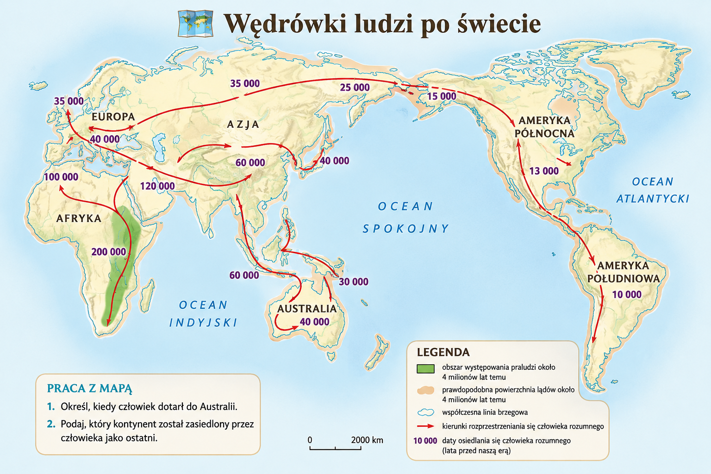
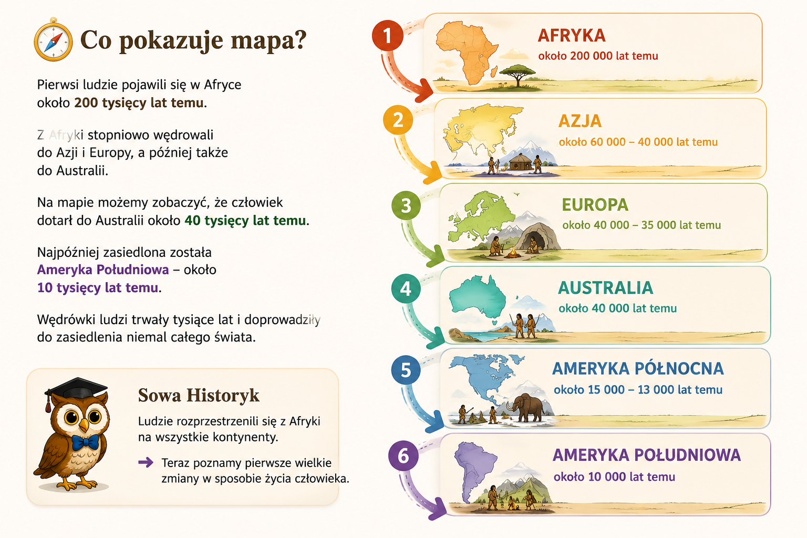
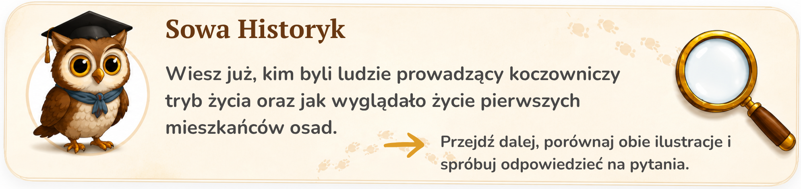

Pierwsi ludzie pojawili się w Afryce około 200 tysięcy lat temu.
Przez tysiące lat stopniowo przemieszczali się na kolejne kontynenty w poszukiwaniu lepszych warunków do życia.
Dotarli do Azji, Europy, Australii, a później także do Ameryki Północnej i Południowej.
Dzięki tym wędrówkom człowiek zasiedlił niemal cały świat.


Pierwsi ludzie pojawili się w Afryce około 200 tysięcy lat temu.
Z Afryki stopniowo wędrowali do Azji i Europy, a później także do Australii.
Na mapie możemy zobaczyć, że człowiek dotarł do Australii około 40 tysięcy lat temu.
Najpóźniej zasiedlona została Ameryka Południowa – około 10 tysięcy lat temu.
Wędrówki ludzi trwały tysiące lat i doprowadziły do zasiedlenia niemal całego świata.
